Olá, Deseja conhecer Araras?
Está no Lugar certo, Abaixo há um pouco sobre nossa Cidade! Venha Conhecer
A Cidade de Araras fundada por Bento de Lacerda Guimarães e José de Lacerda Guimarães em 1862, A Cidade ficou conhecida como Cidade das Árvores, pois sediou em 1902 a primeira Festa da Árvore no Brasil, considerado o primeiro movimento ecológico do país e a primeira manifestação em defesa do meio ambiente da América Latina.
 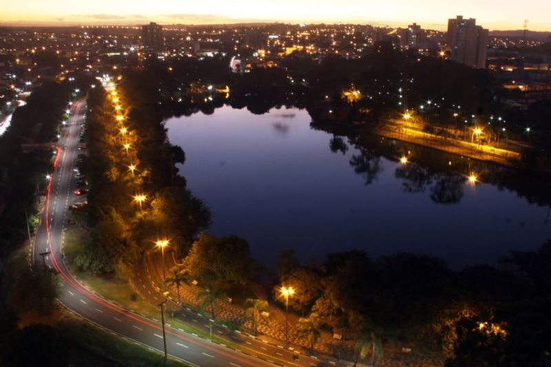
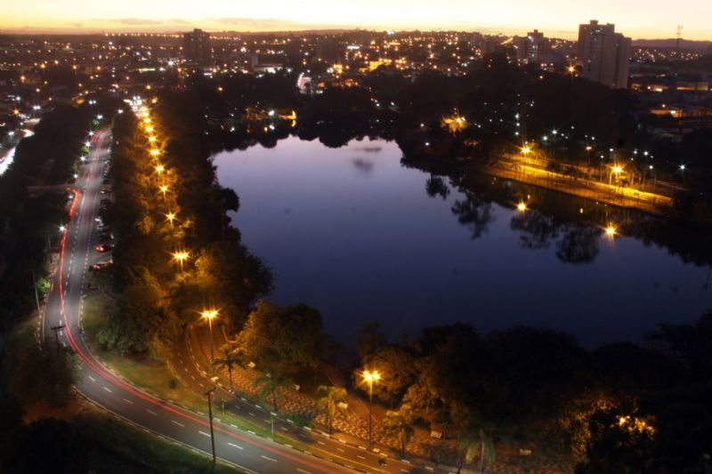
A Cidade neste Ano (2022) Recebeu uma Grande Reforma na Praça deixando ela mais bela para a População!
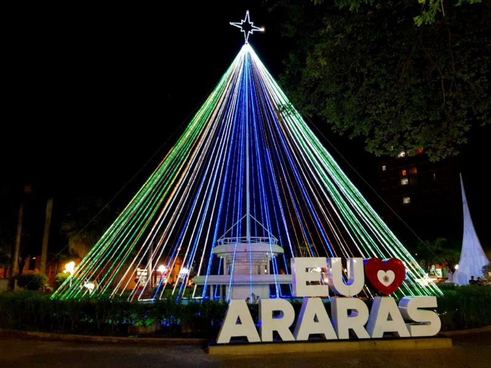
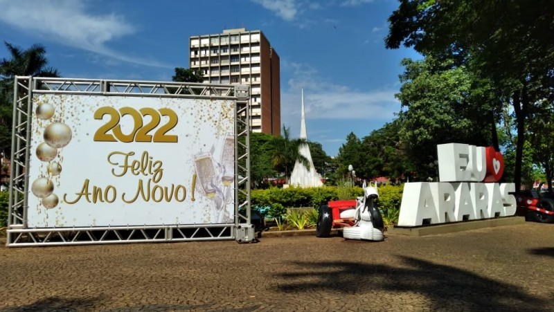
Pontos Turisticos!
Lago Municipal
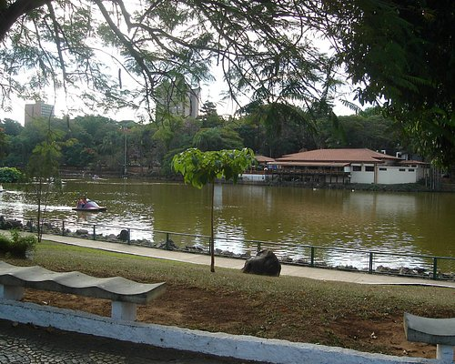
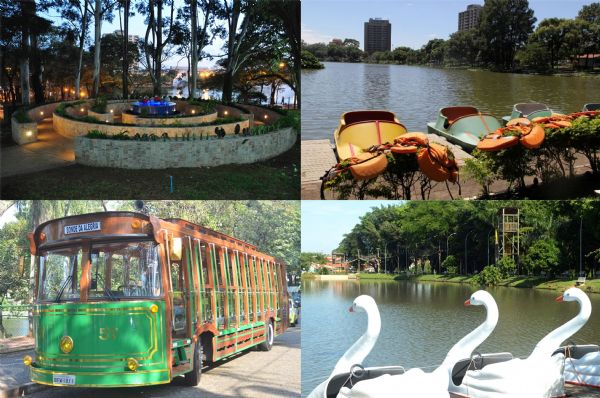
O Lago Ocupando cerca de 89.000 m², o Parque Municipal Fábio da Silva Prado, popularmente conhecido por Lago Municipal de Araras, foi inaugurado em dezembro de 1963, pelo então Prefeito Milton Severino.
Parque Ecológico
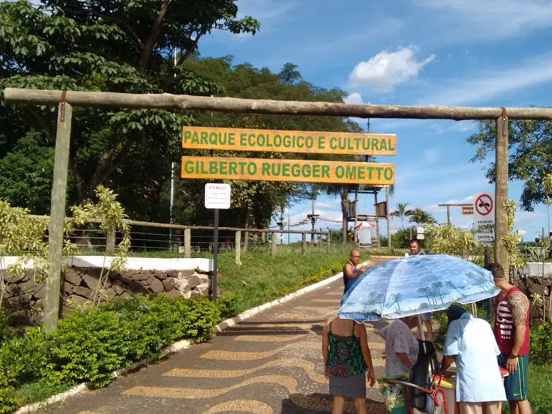
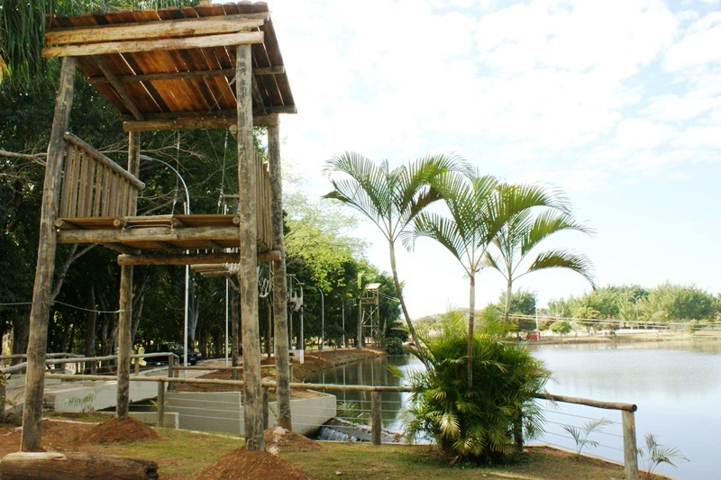
O Parque Ecológico e Cultural “Gilberto Ruegger Ometto” em Araras, esta distribuído em duas áreas distintas.
A Primeira Parte é destinada a eventos de grande porte como shows, feiras e exposições que acontecem todos os anos o parque ecológico é palco da Festa do Peão de Araras, Feira das Nações, Festival da Tainha, Festa Italiana, e 8a Copa Interior de Triathlon e Duathlon
Esta área possui toda infraestrutura necessária para acomodar mais de 30 mil pessoas com arenas, praça de alimentação, parque de diversão, sanitários e estacionamento, Parque de eventos particulares (tem custo financeiro).
A Segunda Parte do parque proporciona aos Visitantes dois lagos arborizados e áreas destinadas a atividades físicas. São mais de dois mil metros quadrados destinados a Caminhadas Calçamento, Iluminação, Pontes, Playground e outras atividades todas gratuitas.
Só tem custo na segunda parte as seguintes:
(Tirolesa e Pedalinho)
Casa das Memórias
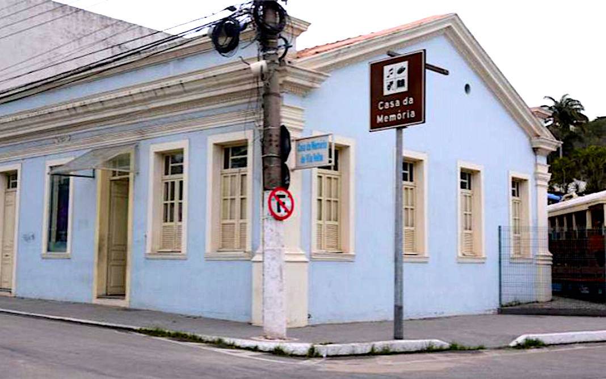
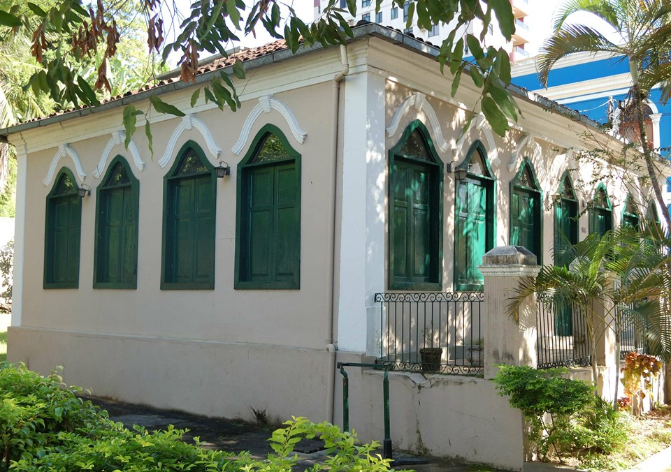
Casa da Memória de Araras, museu interativo que retrata a história da cidade de Araras por intermédio de relatos e depoimentos de historiadores e personalidades da cidade. Alta tecnologia e rico em informação.
Igreja Matriz de Nossa Senhora Aparecida do Patrocinio
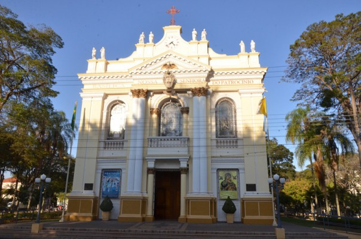
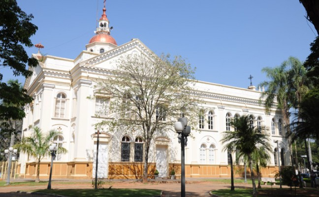
A Igreja foi inaugurada em 1881 graças a Albino Alves Cardoso, que em 1875 deixou em testamento um donativo para possibilitar sua edificação. Inicialmente concebida como Capela, a Igreja é uma réplica da Basílica de São João de Latrão, existente em Roma. Seu construtor foi o arquiteto Tristão Franklin de Alencar Lima. Em 15 de agosto de 2010, o Papa Bento XVI concedeu à Igreja o título de Basílica. Está localizada na Praça Barão de Araras.